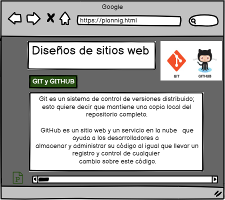

GIT y GITHUB
Objetivo general
Diseñar un OVI para el curso de diseño de sitios web con el tema GIT y GITHUB
Objetivos especificos
- Objetivo espesifico 1
Guardar el historial de cambios sobre el código de un proyecto
- Objetivo especifico 2
Permitir a varias personas contribuir simultáneamente sobre un mismo proyecto
- Objetivo especifico 3
Una Versión de Control ayuda a los desarrolladores llevar un registro
y administrar cualquier cambioen el código del proyecto de software.
Git es un sistema de control específico de versión de fuente abierta
creada por Linus Torvalds en el 2005.
Materiales
- https://blog.makeitreal.camp/git-y-github/#:~:text=Git%2C%20y%20en%20general%20un,simult%C3%A1neamente%20sobre%20un%20mismo%20proyecto.
- https://kinsta.com/es/base-de-conocimiento/que-es-github/
Contenido
- Git es un sistema de control de versiones distribuido
esto quiere decir que mantiene una copia local del repositorio completo.
- GitHub es un sitio web y un servicio en la nube
que ayuda a los desarrolladores a almacenar y administrar su código,
al igual que llevar un registro y control de cualquier cambio sobre este código.
Maquetación
